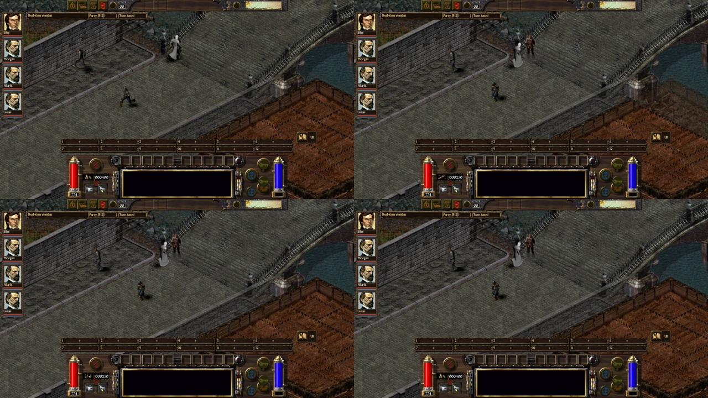
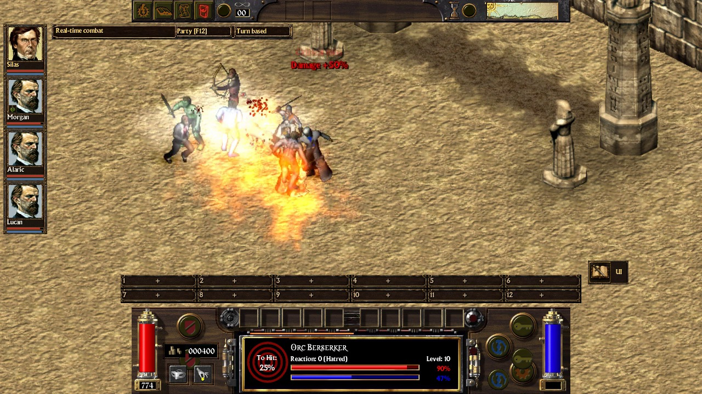
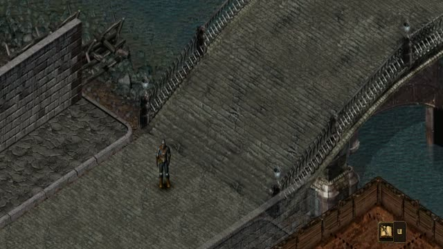
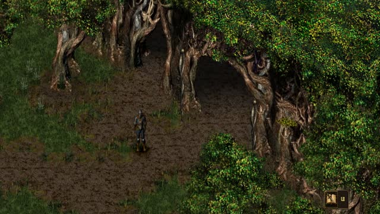
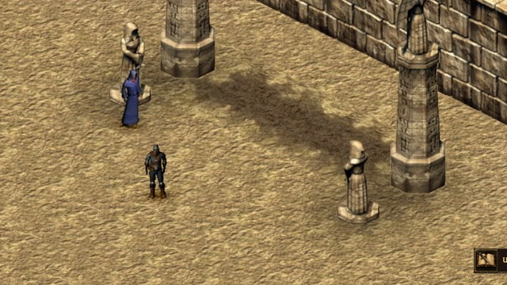

The original campaign. Now for four.
ArcanumMultiplayer
An old world. New company.
Return to Arcanum with up to three friends.
Build your own
character. Share the journey.
WINDOWS ◇ LINUX ◇ ORIGINAL GAME REQUIRED
The original campaign. Together.
FIRST PUBLIC RELEASE 01I Shared adventure
Four characters.
One strange world.
Bring a swordsman, a gunslinger, a mage — or whatever peculiar build Arcanum inspires. Each player controls their own character in the same campaign.
Explore in different directions. Fight side by side. Share dialogue, travel and saves, then pick up where your party left off.

II A familiar world, a better view
Make room for your Arcanum.
Keep the character of the original. Arrange the rest around the way you play.
A HUD that fits
Place portraits, turn order and the combat log where you want them. Give each panel its own size and transparency.
A world you can see
Zoom with the wheel, pan with the middle mouse button, and choose widescreen, UI size and readable text.
Less searching. More playing.
Find items, spells and skills quickly. Compare equipment, mark junk, check recipes and keep your own quest notes.

III Read the battlefield
Know whose turn it is.
And what just happened.
Play in real time or take turns. Follow the fight with visible initiative, action-point previews and a shared combat log.
Watch your party's health, fatigue and conditions. Select an ability and click a portrait to target it — including enemies in the turn order.



Your next playthrough starts here
Some worlds are better shared.
A free community mod. Bring your own copy of Arcanum.
v0.3.0 · x86-64 · Release notes & checksums ↗
Linux build: glibc 2.44+. On an older distribution, build from source.
Polish language: put Eselter 1.7 beside the included ArcanumMP-Polski tool and run it. No Python needed. Setup instructions ↗
-
01
Have the original game
Each player needs a writable Arcanum installation with matching game data and patches.
-
02
Copy the files
Put the bundle's
bin/contents in your game folder. Keep the included libraries and your existing saves. -
03
Invite your party
Launch ArcanumMP and choose Multiplayer. Host or join, create your characters, and begin.
Before you set out.
Do I need the original Arcanum?
Yes. This mod supplies the engine and multiplayer improvements. Original game data is required separately and is not included. All players should use matching game data, patches and mod builds.
Can we play over the internet?
The mod supports LAN discovery and direct IP connections. A VPN that connects your group into a virtual LAN is an option for remote play. Direct connections require the host to be reachable through their network and firewall.
Can I use the new interface on my own?
Yes. The log, inventory and action search, zoom, display options and many other interface improvements also work in single-player.
How do I report a problem?
Open an issue on GitHub. Tell us your game/mod version, where it happened and what each player saw. A save and clear reproduction steps help.